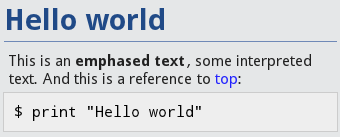

{kind=link}
Table Of Contents
reStructuredText renderer¶
New in version 1.1.0.
reStructuredText is an easy-to-read, what-you-see-is-what-you-get plaintext markup syntax and parser system.
Warning
This widget is highly experimental. The whole styling and implementation are not stable until this warning has been removed.
Usage with Text¶
text = """
.. _top:
Hello world
===========
This is an **emphased text**, some ``interpreted text``.
And this is a reference to top_::
$ print("Hello world")
"""
document = RstDocument(text=text)
The rendering will output:
Usage with Source¶
You can also render a rst file using the RstDocument.source property:
document = RstDocument(source='index.rst')
You can reference other documents with the role :doc:. For example, in the document index.rst you can write:
Go to my next document: :doc:`moreinfo.rst`
It will generate a link that, when clicked, opens the moreinfo.rst document.
- class kivy.uix.rst.RstDocument(**kwargs)[source]¶
Bases: kivy.uix.scrollview.ScrollView
Base widget used to store an Rst document. See module documentation for more information.
- background_color¶
Specifies the background_color to be used for the RstDocument.
New in version 1.8.0.
background_color is an AliasProperty for colors[‘background’].
- base_font_size¶
Font size for the biggest title, 31 by default. All other font sizes are derived from this.
New in version 1.8.0.
- colors¶
Dictionary of all the colors used in the RST rendering.
Warning
This dictionary is needs special handling. You also need to call RstDocument.render() if you change them after loading.
colors is a DictProperty.
- document_root¶
Root path where :doc: will search for rst documents. If no path is given, it will use the directory of the first loaded source file.
document_root is a StringProperty and defaults to None.
- goto(ref, *largs)[source]¶
Scroll to the reference. If it’s not found, nothing will be done.
For this text:
.. _myref: This is something I always wanted.
You can do:
from kivy.clock import Clock from functools import partial doc = RstDocument(...) Clock.schedule_once(partial(doc.goto, 'myref'), 0.1)
Note
It is preferable to delay the call of the goto if you just loaded the document because the layout might not be finished or the size of the RstDocument has not yet been determined. In either case, the calculation of the scrolling would be wrong.
You can, however, do a direct call if the document is already loaded.
New in version 1.3.0.
- preload(filename, encoding='utf-8', errors='strict')[source]¶
Preload a rst file to get its toctree and its title.
The result will be stored in toctrees with the filename as key.
- resolve_path(filename)[source]¶
Get the path for this filename. If the filename doesn’t exist, it returns the document_root + filename.
- show_errors¶
Indicate whether RST parsers errors should be shown on the screen or not.
show_errors is a BooleanProperty and defaults to False.
- source¶
Filename of the RST document.
source is a StringProperty and defaults to None.
- source_encoding¶
Encoding to be used for the source file.
source_encoding is a StringProperty and defaults to utf-8.
Note
It is your responsibility to ensure that the value provided is a valid codec supported by python.
- source_error¶
Error handling to be used while encoding the source file.
source_error is an OptionProperty and defaults to strict. Can be one of ‘strict’, ‘ignore’, ‘replace’, ‘xmlcharrefreplace’ or ‘backslashreplac’.
- text¶
RST markup text of the document.
text is a StringProperty and defaults to None.
- title¶
Title of the current document.
title is a StringProperty and defaults to ‘’. It is read-only.
- toctrees¶
Toctree of all loaded or preloaded documents. This dictionary is filled when a rst document is explicitly loaded or where preload() has been called.
If the document has no filename, e.g. when the document is loaded from a text file, the key will be ‘’.
toctrees is a DictProperty and defaults to {}.
- underline_color¶
underline color of the titles, expressed in html color notation
underline_color is a StringProperty and defaults to ‘204a9699’.